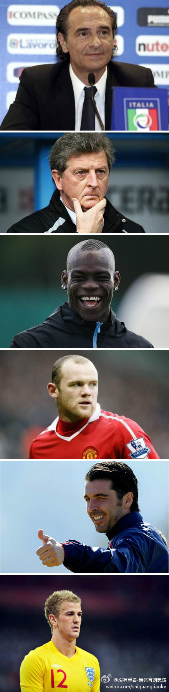

问题是，你也不知道他是看相的呢，还是看球的。//@黄健翔: 还真不是，这个人看相看了好几次了，都应验了。你去翻他的微博查验。//@周亮: 师父，这属于灵异事件吗？哈哈//@黄健翔: 验证了！！！继续看相吧！//@黄健翔: 等待验证。@没有重名-刘忠涛:#面相欧洲杯#普兰德利高额宽鼻大耳朵，面相上乘，于意帮助极大。霍奇森作为西方人而额低，堪称奇葩，己福无多。鲁尼面相上乘，发展已证明，可戾气过重。巴神好相，命有贵人助，做吉祥物对于意大利也是有助。布冯跟乔哈特，相由心生，布冯超脱小乔凝重，日后造诣哈特无量可这次只能仰望。今晚，意过。 